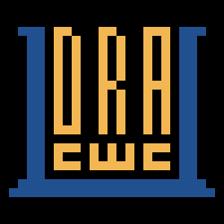

Building tools
I'd actually use.
做自己想用的工具。
Apps, a browser extension and terminal tools by Vulcan Shen.
Vulcan Shen 的 app、瀏覽器擴充功能與終端機工具。


Browser extensions
瀏覽器擴充功能
Chrome · Edge · Firefox
譯 Yi
Open-source, side-by-side bilingual translation for web pages and PDFs. No AI, no API key, no account, no ads.
開源的網頁與 PDF 雙語對照翻譯：不需要 AI、不需要 API Key、不需要註冊帳號，也沒有廣告。
Chrome Web StoreTerminal apps
終端機 app
The terminu family: terminal UIs you can use without reading the docs. Every app runs on the same keys, Tab Enter Esc Space ? q, and when in doubt, press Space.
terminu family：不看文件就能用的終端機介面。每個 app 都用同一組按鍵，不確定的時候，就按 Space。
tetru
A falling-block game for the terminal: move and turn the pieces as they fall, fill a row to clear it, and set the keys to suit your hands.
catu
A file viewer for the terminal: Markdown drawn as a document, mermaid as diagrams, any other file in colour.

ccdrawu
A sidebar and status line for Claude Code: usage limits, context, cost, git and session stats beside the transcript or under the prompt.
Claude Code 的側邊欄與狀態列：用量上限、context、花費、git 與 session 統計，放在對話旁邊或輸入框下方。
locku
A screensaver with a PIN lock, for the terminal, wired into tmux and screen.
sshu
A terminal front end for ssh and sftp: hosts, many live sessions on one screen, and two-sided file transfer.
filu
A terminal file manager you don't have to learn: mark, copy and move across tabs, find by name or content, preview as you go.
kbu
A single-pane Kubernetes workspace: relatives navigation, YAML compare, and a persistent shell built in.
hostu
Switch the hosts file between profiles, in the terminal: the office, home, a client's site, one key each.
Build your own terminu app
自己做一個 terminu app
Design language
terminu design
The keys and screens every terminu app shares.
Go library
terminu-go
Draws and drives a terminal UI the way terminu design says.
Claude Code plugin
terminu-harness
Builds a TUI app with terminu design and terminu-go, from what you want to a finished app.
照 terminu design、用 terminu-go 做 TUI app 的 Claude Code plugin，從想法一路做到完成。